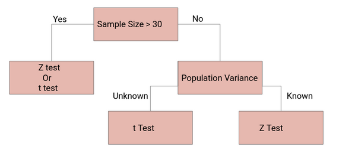

Chapter 12 Hypothesis Testing
Hypothesis testing is a form of statistical inference that uses data from a sample to draw conclusions about a population parameter or a population probability distribution. First, a tentative assumption is made about the parameter or distribution. This assumption is called the null hypothesis and is denoted by \(H_0\). An alternative hypothesis (denoted \(H_a\)), which is the opposite of what is stated in the null hypothesis, is then defined. The hypothesis-testing procedure involves using sample data to determine whether or not \(H_0\) can be rejected. If \(H_0\) is rejected, the statistical conclusion is that the alternative hypothesis \(H_a\) is true.
12.1 P-Value
We can think of a P-value as a conditional probability: given the null hypothesis is true, what’s the probability of obtaining a sample statistic as extreme or more than the one observed by random chance alone. In this type of test, we use the alternative hypothesis \(H_{\mathrm{a}}\) to decide if the P-value comes from the probability above the test statistic, below the test statistic, or comes from a two-sided probability.

12.2 Z-Test

12.2.1 Conditions for proportion inference
12.2.2 Formula: z test statistic
We can calculate the test statistic corresponding to the sample result:
\[ z=\frac{\text { statistic - parameter }}{\text { standard deviation of statistic }} \]
\[ =\frac{\hat{p}-p_{0}}{\sqrt{\frac{p_{0}\left(1-p_{0}\right)}{n}}} \]
(where \(\hat{p}\) is the sample proportion, \(p_{0}\) is the proportion from the null hypothesis, and \(n\) is the sample size).
12.2.3 R: P-value from z-score
R Function
To find the p-value associated with a z-score in R, we can use the pnorm() function, which uses the following syntax:
pnorm(q, mean = 0, sd = 1, lower.tail = TRUE)
where:
q: The z-score
mean: The mean of the normal distribution. Default is 0.
sd: The standard deviation of the normal distribution. Default is 1.
lower.tail: If TRUE, the probability to the left of q in the normal distribution is returned. If FALSE, the probability to the right is returned. Default is TRUE.
Example 1: one-sided
In 2011, \(51 \%\) of cell phone owners in a country reported that their cell phone was a smartphone. The following year, the researchers wanted to test \(H_{0}: p=0.51\) versus \(H_{\mathrm{a}}: p>0.51\), where \(p\) is the proportion of cell phone owners in that country who have a smartphone.
They surveyed a random sample of 934 cell phone owners in that country and found that 501 of them had a smartphone. The test statistic for these results was \(z \approx 1.61\).
What is the P-Value?
pnorm(1.61, lower.tail = F)## [1] 0.05369893P-Value Answer: 0.054
Example 2: two-sided
Amanda read a report saying that \(49 \%\) of teachers in the United States were members of a labor union. She wanted to test whether this was true in her state, so she took a random sample of 300 teachers from her state to test \(H_{0}: p=0.49\) versus \(H_{\mathrm{a}}: p \neq 0.49\), where \(p\) is the proportion of teachers in her state who are members of a labor union.
The sample results showed 134 teachers were members of a labor union, and the corresponding test statistic was \(z \approx-1.50\).
What is the P-Value?
2*pnorm(-1.5)## [1] 0.1336144P-Value Answer: 0.133
12.3 t-Tests
12.3.1 Conditions for mean inference
When we want to carry out inference (build a confidence interval or do a significance test) on a mean, the accuracy of our methods depends on a few conditions. Before doing the actual computations of the interval or test, it’s important to check whether or not these conditions have been met. Otherwise the calculations and conclusions that follow may not be correct.
The conditions we need for inference on a mean are:
Random: A random sample or randomized experiment should be used to obtain the data.
Normal: The sampling distribution of \(\overline{x}\) (the sample mean) needs to be approximately normal. This is true if our parent population is normal or if our sample is reasonably large \((n\geq 30)\).
Independent: Individual observations need to be independent. If sampling without replacement, our sample size shouldn’t be more than \(10\%\) of the population.
Let’s look at each of these conditions a little more in-depth.
The random condition
Random samples give us unbiased data from a population. When we don’t use random selection, the resulting data usually has some form of bias, so using it to infer something about the population can be risky.
For example, suppose a university wants to report the average starting salary of their graduates. How do they obtain the data? They can’t access the salaries of all graduates, and they can’t realistically get salaries from a random sample of graduates. The university could rely on graduates who are willing to share their salaries to calculate the average, but using voluntary response will likely lead to a biased estimate of the true average. Graduates with higher starting salaries will probably be more willing to report their salaries than graduates with low salaries (or graduates without salaries). Also, graduates who participate may claim their salary is higher than it really is, but they’d be unlikely to say it’s lower than it really is.
The big idea is that data that came from a non-random sample may not be representative of its population.
More specifically, sample means are unbiased estimators of their population mean. For example, suppose we have a bag of ping pong balls individually numbered from 0 to 30, so the population mean of the bag is 15. We could take random samples of balls from the bag and calculate the mean from each sample. Some samples would have a mean higher than 15 and some would be lower. But on average, the mean of each sample will equal 15. We write this property as \(\mu_{\bar{x} } =\mu\), which holds true as long as we are taking random samples.
This won’t necessarily happen if we use a non-random sample. Biased samples can lead to inaccurate results, so they shouldn’t be used to create confidence intervals or carry out significance tests.
The normal condition
The sampling distribution of \(\bar{x}\) (a sample mean) is approximately normal in a few different cases. The shape of the sampling distribution of \(\bar{x}\) mostly depends on the shape of the parent population and the sample size n.
Case 1: Parent population is normally distributed
If the parent population is normally distributed, then the sampling distribution of \(\bar{x}\) is approximately normal regardless of sample size. So if we know that the parent population is normally distributed, we pass this condition even if the sample size is small. In practice, however, we usually don’t know if the parent population is normally distributed.
Case 2: Not normal or unknown parent population; sample size is large \((n \geq 30)\)
The sampling distribution of \(\bar{x}\) is approximately normal as long as the sample size is reasonably large. Because of the central limit theorem, when \(n \geq 30\), we can treat the sampling distribution of \(\bar{x}\) as approximately normal regardless of the shape of the parent population.
There are a few rare cases where the parent population has such an unusual shape that the sampling distribution of the sample mean \(\bar{x}\) isn’t quite normal for sample sizes near 30. These cases are rare, so in practice, we are usually safe to assume approximately normality in the sampling distribution when \(n \geq 30\).
Case 3: Not normal or unknown parent population; sample size is small \(n<30\)
As long as the parent population doesn’t have outliers or strong skew, even smaller samples will produce a sampling distribution of \(\bar{x}\) that is approximately normal. In practice, we can’t usually see the shape of the parent population, but we can try to infer shape based on the distribution of data in the sample. If the data in the sample shows skew or outliers, we should doubt that the parent is approximately normal, and so the sampling distribution of \(\bar{x}\) may not be normal either. But if the sample data are roughly symmetric and don’t show outliers or strong skew, we can assume that the sampling distribution of \(\bar{x}\) will be approximately normal.
The big idea is that we need to graph our sample data when \(n < 30\), is less than, 30 and then make a decision about the normal condition based on the appearance of the sample data.
The independence condition
To use the formula for standard deviation of \(\bar{x}\) we need individual observations to be independent. In an experiment, good design usually takes care of independence between subjects (control, different treatments, randomization).
In an observational study that involves sampling without replacement, individual observations aren’t technically independent since removing each observation changes the population. However the 10% condition says that if we sample 10% or less of the population, we can treat individual observations as independent since removing each observation doesn’t change the population all that much as we sample. For instance, if our sample size is \(n=30\) there should to be at least \(N = 300\) members in the population for the sample to meet the independence condition.
Assuming independence between observations allows us to use this formula for standard deviation of \(\bar{x}\) when we’re making confidence intervals or doing significance tests:
\[ \sigma_{\bar{x}}=\frac{\sigma}{\sqrt{n}} \]
We usually don’t know the population standard deviation \(\sigma\), so we substitute the sample standard deviation \(s_x\) as an estimate for \(\sigma\). When we do this, we call it the standard error of \(\bar{x}\) to distinguish it from the standard deviation.
So our formula for standard error of \(\bar{x}\) is:
\[ \sigma_{\bar{x}} \approx \frac{s_{x}}{\sqrt{n}} \]
Summary
If all three of these conditions are met, then we can we feel good about using \(t\) distributions to make a confidence interval or do a significance test. Satisfying these conditions makes our calculations accurate and conclusions reliable.
The random condition is perhaps the most important. If we break the random condition, there is probably bias in the data. The only reliable way to correct for a biased sample is to recollect the data in an unbiased way.
The other two conditions are important, but if we don’t meet the normal or independence conditions, we may not need to start over. For example, there is a way to correct for the lack of independence when we sample more than 10% of a population, but it’s beyond the scope of what we’re learning right now.
The main idea is that it’s important to verify certain conditions are met before we make these confidence intervals or do these significance tests.
12.3.2 Formula: t test statistic
The test statistic gives us an idea of how far away our sample result is from our null hypothesis. For a one-sample t test for a mean, our test statistics is:
\[ \begin{aligned}t &=\frac{\text { statistic }-\text { parameter }}{\text { standard error of statistic }} \\&=\frac{\bar{x}-\mu_{0}}{\frac{s_{x}}{\sqrt{n}}}\end{aligned} \]
The statistic \(\bar{x}\) is the sample mean, and the parameter \(\mu_{0}\) is the mean from the null hypothesis. The standard error of the sample mean is \(s_{x}\) (the sample standard deviation) divided by the square root of \(n\) (the sample size).
12.3.3 R: P-value from t statistic
Degrees of freedom
\(n - 1\)
The function in R: pt()
pt(q = 2, # the t-statistic
df = 5, # the degrees of freedom
lower.tail = T # probabilities for lower or upper tail? Default is True.
)## [1] 0.9490303Example 1: one-sided
Daisy was testing \(H_{0}: \mu=33\) versus \(H_{\mathrm{a}}: \mu>33\) with a sample of 11 observations. Her test statistic was \(t=1.368\). Assume that the conditions for inference were met.
What is the P-value?
pt(q = 1.368, df = 10, lower.tail = F)## [1] 0.100632Example 2: two-sided Jasper was testing \(H_{0}: \mu=36\) versus \(H_{\mathrm{a}}: \mu \neq 36\) with a sample of 16 observations. His test statistic was \(t=2.4\). Assume that the conditions for inference were met.
What is the P-value?
2*pt(q = 2.4, df = 15, lower.tail = F)## [1] 0.0298249312.3.4 R: t-tests
x = rnorm(10)
y = rnorm(10)
t.test(x,y)##
## Welch Two Sample t-test
##
## data: x and y
## t = 0.027563, df = 17.872, p-value = 0.9783
## alternative hypothesis: true difference in means is not equal to 0
## 95 percent confidence interval:
## -1.137910 1.168149
## sample estimates:
## mean of x mean of y
## 0.021612146 0.00649263112.4 t or z Statistic?
z-tests are a statistical way of testing a hypothesis when either:
We know the population variance, or
We do not know the population variance but our sample size is large n ≥ 30
If we have a sample size of less than 30 and do not know the population variance, then we must use a t-test.
The t-test is kind of a weaker statistic, but which helps us if we have less information available.


Proportion significance tests don’t need t-tests, because we can calculate the z-score without the sampling distribution or population standard deviation.